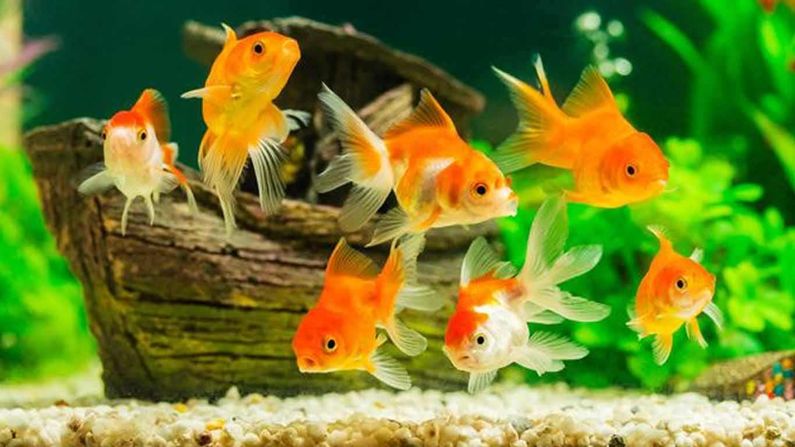

Ikan Mas Koki
Ikan Mas Koki merupakan salah satu jenis ikan hias yang populer dikalangan pecinta ikan hias. Ikan ini memiliki karakteristik perut buncit dan warna yang cerah dan cantik yang membuat banyak orang menyukainya.
Meskipun ikan mas koki menjadi ikan hias yang cukup populer, namun ikan ini masih memiliki harga yang cukup terjangkau, yaitu sekitar Rp10.000 hingga puluhan ribu per ekornya. Meski begitu, ada juga jenis ikan mas koki yang mencapai harga ratusan ribu, tergantung jenis dan usianya.
Perawatan
Tempat dimana ikan mas koki akan hidup ukurannya harus benar-benar diperhatikan. Tidak masalah memeliharanya di akuarium namun perhatikan ukurannya. Minimal akuarium tersebut memiliki panjang 80 cm, lebar 40 cm dan tinggi 30 cm. Ingat, ikan mas koki dapat tumbuh hingga 20 cm lebih. Maka dari itu sediakan tempat yang besar agar tidak mati.
Memperhatikan kualitas air yang akan digunakan untuk ikan mas koki sangat penting. Pada dasarnya tidak semua air itu baik untuk memelihara ikan termasuk mas koki. Air berkualitas baik memiliki kadar ph cukup dan amoniak rendah. Secara awam, air tanah sangat bagus untuk ikan koki. Namun jangan gunakan air PDAM atau sejenisnya. Keberadaan sistem filtrasi pada akuarium ikan mas koki sangat penting. Filter itu sendiri memiliki fungsi sebagai penyaring sekaligus pengurai kotoran ikan. Didalam filter itu sendiri akan terjadi proses dimana amoniak diurai menjadi oksigen. Fiter yang baik untuk ikan mas koki biasanya terdiri dari kapas saringan, bioball dan zeolit.
Bagi yang masih awam, pasti bingung apa itu bakteri starter. Ini berfungsi sebagai pemicu bakteri baik yang bertugas mengurai amoniak dari dalam air yang sangat baik untuk ikan mas koki. Setiap kolam ikan pasti memiliki bakteri ini, penggunaan bakteri starter bertujuan untuk meningkatkan jumlah bakteri baik agar cepat berkembang. Salah satu alasan kenapa ikan mas koki cepat mati bukan karena salah merawat, namun lebih karena kadar oksigen dalam air yang sangat rendah. Ikan mas koki sangat membutuhkan air yang kaya akan oksigen. Oksigen terlarut dalam air dapat diciptakan dengan cara memberi aerator dengan pemecah gelembung kecil-kecil.
Ikan mas koki adalah ikan yang terkenal rakus. Ikan ini seakan tidak pernah kenyang meski sudah makan banyak. Disinilah letak kesalahan merawat ikan mas koki yang sering dilakukan. Banyak orang yang terlalu berlebihan memberi makan karena mengira ikan ini sedang lapar. Padahal itu salah. Memberi makan ikan mas koki cukup 3 kali sehari. Salah satu syarat merawat ikan mas koki adalah membersihkan akuarium secara teratur. Ada banyak kotoran yang ada didalam akuarium termasuk kotoranikan itu sendiri. Terkadang ada juga alga atau lumut pada dinding akuarium yang membuat kotor. Maka dari itu, bersihkan akuarium secara teratur agar ikan mas koki tidak cepat mati.
Reproduksi
Siklus hidup ikan mas dimulai dari perkembangan di dalam gonad (ovarium pada ikan betina yang menghasilkan telur dan testis pada ikan jantan yang menghasilkan sperma). Sebenarnya pemijahan ikan mas dapat terjadi sepanjang tahun dan tidak tergantung pada musim. Namun, di habitat aslinya, ikan mas sering memijah pada awal musim hujan, karena adanya rangsangan dari aroma tanah kering yang tergenang air. Secara alami, pemijahan terjadi pada tengah malam sampai akhir fajar. Menjelang memijah, induk-induk ikan mas aktif mencari tempat yang rimbun, seperti tanaman air atau rerumputan yang menutupi permukaan air. Substrat inilah yang nantinya akan digunakan sebagai tempat menempel telur sekaligus membantu perangsangan ketika terjadi pemijahan.
Sifat telur ikan mas adalah menempel pada substrat. Telur ikan mas berbentuk bulat, berwarna bening, berdiameter 1,5-1,8 mm, dan berbobot 0,17-0,20 mg. Ukuran telur bervariasi, tergantung dari umur dan ukuran atau bobot induk. Embrio akan tumbuh di dalam telur yang telah dibuahi oleh spermatozoa. Antara 2-3 hari kemudian, telur-telur akan menetas dan tumbuh menjadi larva. Larva ikan mas mempunyai kantong kuning telur yang berukuran relatif besar sebagai cadangan makanan bagi larva. Kantong kuning telur tersebut akan habis dalam waktu 2-4 hari. Larva ikan mas bersifat menempel dan bergerak vertikal. Ukuran larva antara 0,5-0,6 mm dan bobotnya antara 18–20 mg.
Larva berubah menjadi kebul (larva stadia akhir) dalam waktu 4-5 hari. Pada stadia kebul ini, ikan mas memerlukan pasokan makanan dari luar untuk menunjang kehidupannya. Pakan alami kebul terutama berasal dari zooplankton, seperti rotifera, moina, dan daphnia. Kebutuhan pakan alami untuk kebul dalam satu hari sekitar 60-70% dari bobotnya. Setelah 2-3 minggu, kebul tumbuh menjadi burayak yang berukuran 1–3 cm dan bobotnya 0,1-0,5 gram. Antara 2-3 minggu kemudian burayak tumbuh menjadi putihan (benih yang siap untuk didederkan) yang berukuran 3–5 cm dan bobotnya 0,5-2,5 gram. Putihan tersebut akan tumbuh terus. Setelah tiga bulan berubah menjadi gelondongan yang bobot per ekornya sekitar 100 gram. Gelondongan akan tumbuh terus menjadi induk. Setelah enam bulan dipelihara, bobot induk ikan jantan bisa mencapai 500 gram. Sementara itu, induk betinanya bisa mencapai bobot 1,5 kg setelah berumur 15 bulan. Induk-induk ikan mas tersebut mempunyai kebiasaan mengaduk-aduk dasar perairan atau dasar kolam untuk mencari makanan.